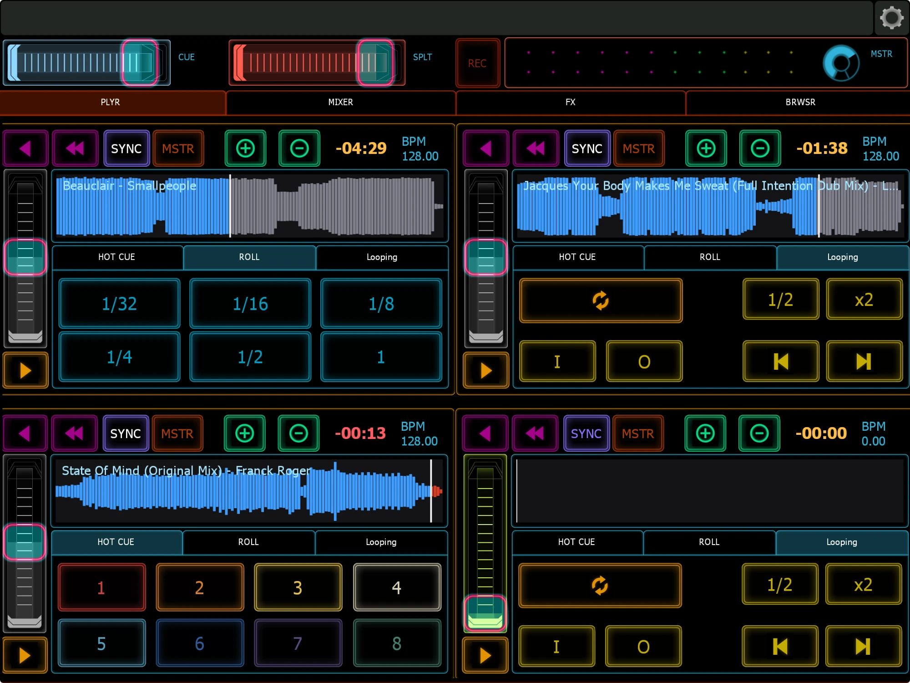
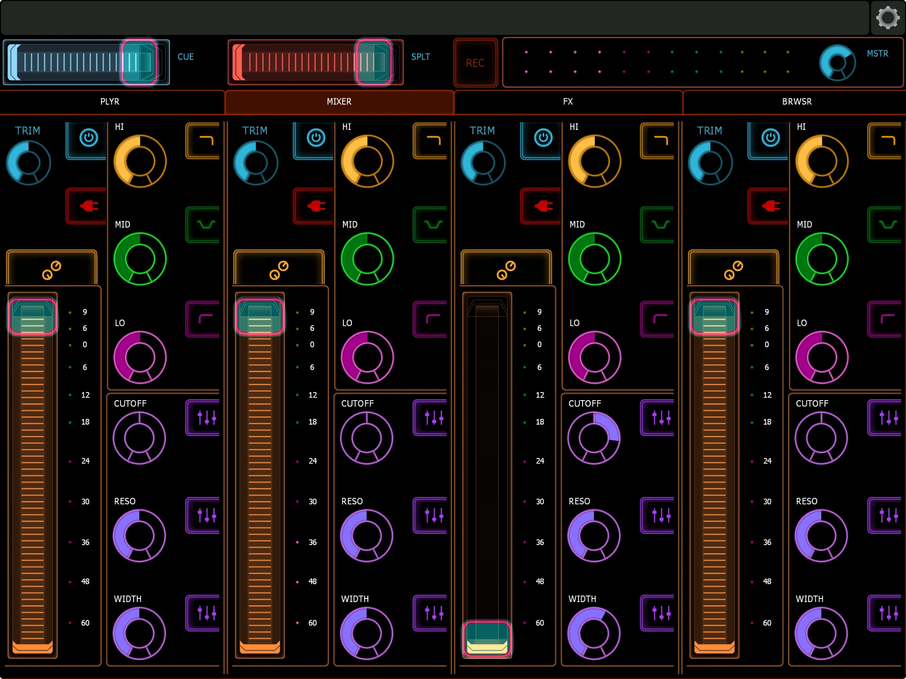
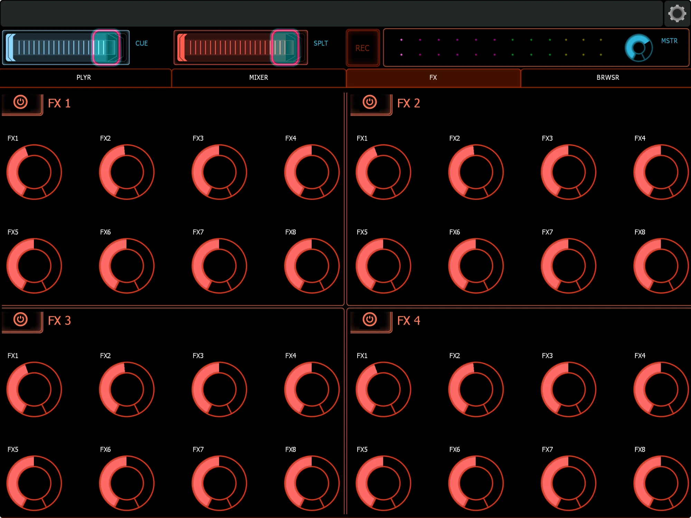
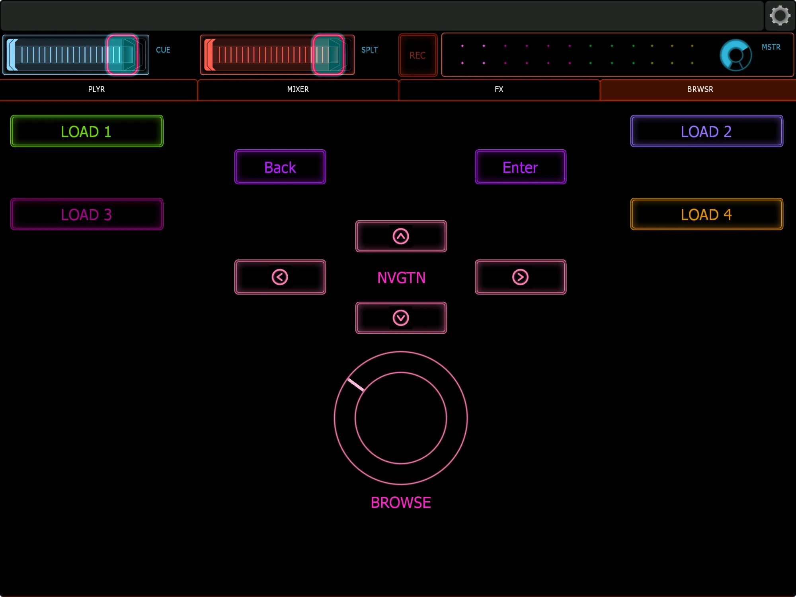

A 4-deck iPad controller for the Syndicate DJ app. Two-way: it controls the decks and mixer, and Syndicate sends back live waveforms, meters, BPM, time remaining, cue colours and pitch position.

A small helper on your computer reads each loaded track and draws its waveform on the iPad. The waveform turns red in the last 30 seconds.
Tap or drag on the waveform to jump into a track. Handy for old rips with no cue points.
Channel and master meters, track title, key, -mm:ss remaining (flashes near the end), master-synced BPM, and play and sync state.
Hot cue pads use Syndicate's slot colours and light up only where a cue is set.
Each fader shows the deck's real pitch position, and turns grey while Sync locks it.
Trim, 3-band EQ with kill switches, filter with one-tap resets for Cutoff, Reso and Width, FX macros, and a browse dial.



| File | What it is |
|---|---|
Lemuricate-4deck.jzml | The Lemur template. Open it in the Lemur Editor and sync it to your iPad. |
Lemur-Syndicate-4deck.sdcmap | The Syndicate MIDI mapping profile for 4 decks, the mixer, FX and the browser. |
syndicate_lemur_bridge.py | An optional helper for Mac or Windows (Python 3 and ffmpeg). It passes Syndicate's feedback to the iPad and adds the waveforms. |
Lemuricate-4deck.jzml to the iPad. Set MIDI target 0 to your computer (Daemon Input 0). Add OSC target 1 = your computer's IP, port 9090.Lemur-Syndicate-4deck.sdcmap and bind it to Daemon Input 0.127.0.0.1, port 9096, and subscribe to the deck, mixer and header messages listed in the guide.python3 syndicate_lemur_bridge.py --ipad YOUR.IPAD.IPOn Windows use
python instead of python3, and install ffmpeg with winget install ffmpeg.python3 -c "import socket,struct;socket.socket(2,2).sendto(b'/Syndicate/Feedback/Resend\0\0,i\0\0'+struct.pack('>i',1),('127.0.0.1',9090))"
Syndicate's OSC input must be on for any of these to work.The full guide covers every setting, every control and troubleshooting.